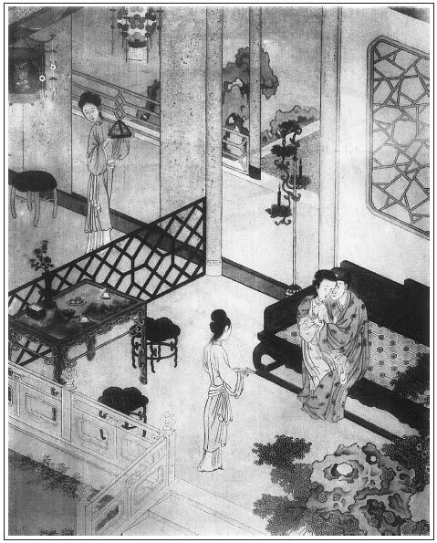

張回此回內，總是照下文，故作滿心滿意之筆，十分圓滿，以與下文走滾作照也。
寫瓶兒於子虛死後，好事已成，乃反口口聲聲作乞哀乞憐之筆。人謂寫瓶兒熱，不知其寫瓶兒心悔也。何則？一時高興，將傢俬盡寄出去，其意謂子虛不死，我不過相隔一牆，財務先去，人可輕身越牆而過矣；及一旦子虛身死，乃深悔從前貨落人手，此際不得不依人項下，作討冷熱口氣也。此段隱情，乃作者追魂取影之筆，人俱混混看過，辜作者深心矣。
寫伯爵輩追歡，乃特特與一回「熱結」文字作繳也。然卻寫得不堪之甚。
寫花子由輩，乃特特為武松反補也。夫爭家財時，不惜東京告狀；而弟死，不問何由，弟媳孝服未滿，攜資嫁人，且曰至三日千萬令其走走，認為親戚。此等人是何肺腑？直令人失聲大哭。願萬萬世不見此等人一面也。
子虛結弟兄，固熱得不妙；親弟兄，又冷得無情。真是浮浪不堪之人。而子由輩，乃更非人類，較之伯爵輩為更可殺也。
王婆遇雨一回，將金蓮情事，故意寫得十分滿足。卻是為「占鬼卦」一回安線。此回兩番描寫在瓶兒家情事。二十分滿足，亦是為竹山安線。文章有反射法。此等是也。然對「遇雨」一回，此又是故意犯手文字，又是加一倍寫法。蓋金蓮家是一遍，瓶兒獨用兩遍，且下文還用一遍，方渡敬濟一筍。總是雕弓須十分滿扯，方才放箭也。
詩曰：
傾城傾國莫相疑，巫水巫雲夢亦癡。
紅粉情多銷駿骨，金蘭誼薄惜蛾眉。繡旁痛心語。張旁哭殺子虛。
溫柔鄉里精神健，窈窕風前意態奇。
村子不知春寂寂，千金此夕故踟躕。張旁一回主意。

話說當日西門慶出離院門，玳安跟馬，逕到獅子街李瓶兒家，見大門關著，繡旁不放一些空。就知堂客轎子家去了。玳安叫馮媽媽開了門，西門慶進來。李瓶兒在堂中秉燭，花冠齊整，素服輕盈，張夾妙絕孝妝。正倚簾櫳盼望。見西門慶來，忙移蓮步，款促湘裙，下階迎接，笑道：「你早來些兒，他三娘、五娘還在這裡，只剛才起身去了。張夾然則已明做矣。今日他大娘去的早，說你不在家。那裡去了？」西門慶道：「今日我和應二哥、謝子純早晨看燈，打你門首過去來。不想又撞見兩個朋友，張夾一路稱謂，親疏自見。拉去院裡，撞到這咱晚。我恐怕你這裡等候，小廝去時，教我推淨手，打後門跑了。不然必吃他們掛住了，休想來的成。」
李瓶兒道：「適間多謝你重禮。他娘們又不肯坐，只說家裡沒人，教奴到沒意思的。」張夾寫瓶兒熱處。於是重篩美酒，再整佳餚，堂中把花燈都點上，放下暖簾來。金爐添獸炭，寶篆爇龍涎。婦人遞酒與西門慶，磕下頭去說道：「拙夫已故，舉眼無親。今日此杯酒，只靠官人與奴作個主兒，休要嫌奴醜陋，奴情願與官人鋪床疊被，與眾位娘子作個姊妹，奴自己甘心。繡眉一片眷戀心情，雖鐵石人亦動。不知官人心下如何？」說著滿眼淚落。張夾此時猶作此語，見瓶兒心無定見一味熱急，故有竹山一事也。然又有一段心事在內。西門慶一手接酒，一手扯他道：「你請起來。張夾便非往日謙恭。人情如畫。既蒙你厚愛，我西門慶銘刻於心。待你孝服滿時，張夾怕花大故也。所以怕花大者，以前告子虛一事故也。我自有處，不勞你費心。今日是你的好日子，咱每且吃酒。」西門慶吃畢，亦滿斟一杯回奉。婦人吃畢，安席坐下。馮媽媽單管廚下。須臾，拿面上來吃。西門慶因問道：「今日唱的是那兩個？」李瓶兒道：「今日是董嬌兒、韓金釧兒兩個。臨晚，送他三娘、五娘家中討花兒去了。」兩個在席上交杯換盞飲酒，繡春、迎春兩個在旁斟酒下菜伏侍。張夾照管丫頭。只見玳安上來，與李瓶兒磕頭拜壽。李瓶兒連忙起身還了個萬福，張夾寫瓶兒之勢。吩咐迎春教老馮廚下看壽麵點心下飯，拿一壺酒與玳安吃。西門慶吩咐：「吃了早些回家去罷。」李瓶兒道：「到家裡，你娘問，休說你爹在這裡。」張夾然則獨不瞞三娘、五娘也。玳安道：「小的知道，只說爹在裡邊過夜。張夾句句以裡邊暗比。明日早來接爹就是了。」西門慶點了點頭兒，繡旁畫。當下把李瓶兒喜歡的要不的，說道：「好個乖孩子，眼裡說話。」又叫迎春拿二錢銀子與他節間買瓜子兒嗑：「明日你拿個樣兒來，我替你做雙好鞋兒穿。」那玳安連忙磕頭說：「小的怎敢？」走到下邊吃了酒飯，帶馬出門。馮媽媽把大門關上了拴。
李瓶兒同西門慶猜枚吃了一回，又拿一副三十二扇象牙牌兒，桌上鋪茜紅苫條，兩個抹牌飲酒。張夾子虛安在？梁中書以安在？可歎，可歎！吃一回，吩咐迎春房裡秉燭。原來花子虛死了，迎春、繡春都已被西門慶耍了，以此凡事不避，教他收拾鋪床，拿果盒杯酒。又在床上紫錦帳裡，婦人露著粉般身子，西門慶香肩相並，玉體廝挨。兩個看牌，拿大鐘飲酒。因問西門慶：「你那邊房子幾時收拾？」張夾蓋房只如此串入。西門慶道：「且待二月間興工，連你這邊一所通身打開，與那邊花園取齊。前邊起蓋個山子卷棚，花園耍子。後邊還蓋三間玩花樓。」婦人因指道：「奴這床後茶葉箱內，還藏三四十斤沉香、二百斤白蠟、兩罐子水銀、八十斤胡椒。你明日都搬出來，替我賣了銀子，湊著你蓋房子使。你若不嫌奴醜陋，到家好歹對大娘說，奴情願與娘們做個姊妹，隨問把我做第幾個也罷。張夾又說，熱極能不反冷哉。親張夾親。，奴捨不的你。」繡眉深情人必冷，瓶兒太濃太熱，豈深於情者哉！故一疏即歇，作者之意微矣。說著，眼淚紛紛的落將下來。張旁銀去財空，反求於人。心事畢露。西門慶忙把汗巾兒抹拭，繡旁畫。說道：「你的情意，我已盡知。待你這邊孝服滿，張夾三字襯得不堪。我那邊房子蓋了才好。不然娶你過去，沒有住房。」婦人道：「既有實心娶奴家去，張夾然而瓶兒心沿不定。總是心事。到明日好歹把奴的房蓋的與他五娘在一處，奴捨不的他好個人兒，繡旁寫出瓶兒之淺。與後邊孟家三娘，見了奴且親熱。兩個天生的打扮，也不像兩個姊妹，只像一個娘兒生的一般。繡眉有我見猶憐之意。張夾又親玉樓。惟有他大娘性兒不是好的，快眉眼裡掃人。」西門慶說道：「俺吳家的這個拙荊，他到是好性兒哩。繡旁知妻莫如夫。不然手下怎生容得這些人？明日這邊與那邊一樣，蓋三間樓與你居住，安兩個角門兒出入。張夾記清。你心下如何？」婦人道：「我的哥哥，這等才可奴的意！」張夾心事如畫。於是兩個顛鸞倒鳳，淫慾無度。狂到四更時分，張夾一語中知萬描寫。方才就寢。枕上並肩交股，直睡到次日飯時不起來。張夾只如此，描寫已盡。
婦人且不梳頭，迎春拿進粥來，張旁與「情感」一回對峙照應。只陪著西門慶吃了半盞粥兒，又拿酒來，二人又吃。原來李瓶兒好馬爬著，張旁又與離間月娘對鎖。教西門慶坐在枕上，他倒插花往來自動。張夾情景因「瓶」字生出也。 兩個正在美處，只見玳安兒外邊打門，騎馬來接。西門慶喚他在窗下問他話。玳安說：「家中有三個川廣客人，在家中坐著。有許多細貨要科兌與傅二叔，只要一百兩銀子押合同，約八月中找完銀子。大娘使小的來請爹家去理會此事。」繡眉忽接一段生意，映出西門慶本來市井面目，以見後富貴破敗之暴無怪也。張夾雖問中照管藥店，卻是為敬濟一引。西門慶道：「你沒說我在這裡？」玳安道：「小的只說爹在桂姨家，張夾瓶兒不以為嫌，妙，妙！沒說在這裡。」西門慶道：「你看不曉事！張夾說月娘。教傅二叔打發他便了，又來請我怎的？」玳安道：「傅二叔講來，客人不肯，直等爹去，方才批合同。」李瓶兒道：「既是家中使孩子來請，買賣要緊，你不去，惹的大娘不怪麼？」西門慶道：「你不知，賊蠻奴才，行市遲，貨物沒處發兌，才上門脫與人。繡旁在行。若快時，他就張致了。滿清河縣，除了我家鋪子大，張旁又映竹山藥店。發貨多，隨問多少時，不怕他不來尋我。」繡旁又貪浪。婦人道：「買賣不與道路為仇，繡旁瓶兒亦能此語，奇！只依奴到家打發了再來。往後日子多如柳葉兒哩。」西門慶於是依李瓶兒之言，慢慢起來，梳頭淨面，戴網巾，穿衣服。李瓶兒收拾飯與他吃了，西門慶一直帶著個眼紗，騎馬來家。
鋪子裡有四五個客人，等候秤貨兌銀。批了合同，打發去了。走到潘金蓮房中，金蓮便問：「你昨日往那裡去來？實說便罷，不然我就嚷的塵鄧鄧的。」張夾心已塵出久駱駝。西門慶道：「你們都在花家吃酒，我和他們燈市裡走了走，就同往裡邊吃酒，過一夜。今日小廝接我方才來家。」金蓮道：「我知小廝去接，那院裡有你魂兒？罷麼，賊負心，你還哄我哩！那淫婦昨日打發俺們來了，弄神弄鬼的。晚夕叫了你去，㒲搗了一夜，㒲搗的了，才放來了。繡旁捨金蓮無此口角。玳安這賊囚根子，久慣兒牢成，對著他大娘又一樣話兒張夾明外月娘。，對著我又是一樣話兒。先是他回馬來家，他大娘問他：『你爹怎的不來？在誰家吃酒哩？』他回說：『和傅二叔眾人看了燈回來，都在院裡李桂姨家吃酒，叫我明早接去哩。』落後我叫了問他，他笑不言語。問的急了，繡眉「問的急了」四字，自家寫出，自家好問，妙甚！冷甚！才說：『爹在獅子街花二娘那裡哩！』賊囚根，他怎的就知我和你一心一話！張夾又妒又奸，籠絡西門慶。為後文間月娘張本。想必你叫他說來。」西門慶道：「我那裡教他？」於是隱瞞不住，方才把李瓶兒「晚夕請我去到那裡，與我遞酒，說空過你們來了。又哭哭啼啼告訴我說，他沒人手，後半截空，晚夕害怕，一心要教我娶他。問幾時收拾這房子。他還有些香燭細貨，也值幾百兩銀子，教我會經紀，替他打發。銀子教我收，湊著蓋房子。上緊修蓋，他要和你一處住，與你做個姊妹，恐怕你不肯。」繡旁金蓮順情，在此數語。婦人道：「我也不多著個影兒在這裡，巴不的來總好。我這裡也空落落的，得他來與老娘做伴兒。自古舡多不礙港，車多不礙路，我不肯招他，當初那個怎麼招我來？張夾忽作此言，見得妒心起，自亦太能主也。攙奴甚麼分兒也怎的？倒只怕人心不似奴心。繡旁到底不饒人。繡眉數語說來非假，聽之甚賢，自是一時順情之言，非素性也。故稍逆之，輒怒。要強婦人大都如此。你還問聲大姐姐去。」西門慶道：「雖故是恁說，他孝服未滿哩。」張夾此時西門已十分穩拿定矣。然卻是怕花大心事。說畢，婦人與西門慶脫白綾襖，袖子裡滑浪一聲掉出個物件兒來，繡旁偏有許多生發。拿在手裡沉甸甸的，彈子大，認了半日，竟不知甚麼東西。但見：
原是番兵出產，逢人薦轉在京。身軀小內玲瓏。得人輕借力，輾轉作蟬鳴。解使佳人心顫，慣能助腎威風。號稱金面勇先鋒。戰降功第一，揚名勉子鈴。
婦人認了半日，問道：「是甚麼東西兒？怎的把人半邊胳膊都麻了？」繡眉只在無意中點染。西門慶笑道：「這物件你就不知道了，名喚做勉鈴，南方勉甸國出來的。好的也值四五兩銀子。」婦人道：「此物使到那裡？」西門慶道：「先把他放入爐內，然後行事，妙不可言。」婦人道：「你與李瓶兒也干來？」繡旁突語刺骨。張夾畫出兩層，妙絕。西門慶於是把晚間之事，從頭告訴一遍。說得金蓮淫心頓起，兩個白日裡掩上房門，解衣上床交歡。正是：
不知子晉緣何事，才學吹簫便作仙。
話休饒舌。一日西門慶會了經紀，把李瓶兒的香蠟等物，都秤了斤兩，共賣了三百八十兩銀子。李瓶兒只留下一百八十兩盤纏，其餘都付與西門慶收了，湊著蓋房使。教陰陽擇用二月初八日興土動工。將五百兩銀子委付大家人來招並主管賁四，卸磚瓦木石，管工計帳。這賁四名喚賁第傳，年少生的浮浪囂虛，百能百巧。原是內相勤兒出身，因不守本分，被趕出來。初時跟著人做兄弟，次後投入大人家做家人，把人家奶子拐出來做了渾家，繡眉敘賁四履歷陞遷，不差一線。張夾又付賁四嫂。卻在故衣行做經紀。琵琶簫管都會。西門慶見他這般本事，常照管他在生藥鋪中秤貨討人錢使。以此凡大小事情，少他不得。當日賁四、來招督管各作匠人興工。先拆毀花家那邊舊房，打開牆垣，張旁了卻此牆。築起地腳，蓋起卷棚山子、各亭台耍子去處。非止一日，不必盡說。
光陰迅速，日月如梭。西門慶起蓋花園，約個月有餘。卻是三月上旬，乃花子虛百日。李瓶兒預先請過西門慶去，和他計議，要把花子虛靈燒了：「房子賣的賣，不的，你著人來看守。你早把奴娶過去罷！隨你把奴作第幾個，奴情願伏侍你鋪床疊被。」張旁與前一字不差，心事如畫。說著淚如雨下。繡旁可憐。西門慶道：「你休煩惱。我這話對房下和潘五姐也說過了，直待與你把房蓋完，那時你孝服將滿，張夾總是怕花大。娶你過門不遲。」李瓶兒道：「你既有真心娶奴，張旁心事。先早把奴房攛掇蓋了。娶過奴去，到你家住一日，死也甘心。繡旁可憐。省得奴在這裡度日如年。」張夾一味熱。西門慶道：「你的話，我知道了。」李瓶兒道：「再不的，我燒了靈，先搬在五娘那邊住兩日。繡眉寫急情，一步緊如一步，蓋為招蔣竹山地也。張夾一味熱。等你蓋了新房子，搬移不遲。你好歹到家和五娘說，我還等你的話。這三月初十日，是他百日，張夾因嫁期算到百日，可歎，可歎！我好唸經燒靈。」西門慶應諾，與婦人歇了一夜。
到次日來家，一五一十對潘金蓮說了。金蓮道：「可知好哩！奴巴不的騰兩間房與他住。你還問聲大姐姐去。我落得河水不洗船。」西門慶一直走到月娘房裡來，月娘正梳頭。西門慶把李瓶兒要嫁一節，從頭至尾說一遍。月娘道：「你不好娶他的。繡旁攔頭板。他頭一件，孝服不滿；第二件，你當初和他男子漢相交；張夾何不早說？第三件，你又和他老婆有連手，買了他房子，收著他寄放的許多東西。繡旁當時收銀日，何不絕之？張夾然則不娶他，此東西將安然不題乎？寫月娘欺心險行，可恨，可恨！吾故曰作者純以隱筆寫月娘也。常言：機兒不快梭兒快。我聞得人說，他家房族中花大是個刁徒潑皮。倘一時有些聲口，倒沒的惹虱子頭上搔。繡旁當心一拳。奴說的是好話。趙錢孫李，你依不依，隨你！」繡眉所慮極是，但此時拒之晚矣。張夾正顏厲色一番，卻又如此說出數語。總是痛癢不關。可恨，可恨！幾句說的西門慶閉口無言。走出前廳來，坐在椅子上沉吟：繡旁如畫。又不好回李瓶兒話，又不好不去的。尋思了半日，還進入金蓮房裡來。繡旁從容得妙。金蓮問道：「大姐姐怎麼說？」西門慶把月娘的話告訴了一遍。金蓮道：「大姐姐說的也是。繡旁平心言便公。張夾妙絕，兩可。然則西門自愚也。你又買了他房子，又娶他老婆，當初又與他漢子相交，既做朋友，沒絲也有寸，交官兒也看喬了。」西門慶道：「這個也罷了。繡眉「這個也罷了」一語，寫得交情掃地，可勝痛哭。到只怕花大那廝沒圈子跳，知道挾制他孝服不滿，在中間鬼渾。怎生計較？我如今又不好回他的。」金蓮道：「呸！有甚難處的事？你到那裡只說：『我到家對五娘說來，他的樓上堆著許多藥料，你這傢伙去到那裡沒處堆放，亦發再寬待些時，你這邊房子也七八蓋了，攛掇匠人早些裝修油漆停當，你這裡孝服也將滿。那裡娶你過去，卻不齊備些。強似搬在五娘樓上，葷不葷，素不素，張夾然則同在花園住，亦只葷不葷，素不素。此六字，可共贈金、瓶、梅三人也。擠在一處甚麼樣子！』管情他也罷了。」
西門慶聽言大喜，那裡等的時分，就走到李瓶兒家。婦人便問：「所言之事如何？」西門慶道：「五娘說來，一發等收拾油漆你新房子，你搬去不遲。如今他那邊樓上，堆的破零零的，你這些東西過去那裡堆放？還有一件打攪，只怕你家大伯子說你孝服不滿，繡眉心病，故忍不住說出。張夾正景心事。如之奈何？」婦人道：「他不敢管我的事。休說各衣另飯，當官寫立分單，已倒斷開了，只我先嫁由爹娘，後嫁由自己。常言：嫂叔不通問，大伯管不的我暗地裡事。我如今見過不的日子，他顧不的我。他但若放出個屁來，我教那賊花子坐著死不敢睡著死。大官人你放心，他不敢惹我。」因問：「你這房子，也得幾時方收拾完備？」西門慶道：「我如今吩咐匠人，先替你蓋出這三間樓來，及至油漆了，也到五月頭上。」婦人道：「我的哥哥，你上緊些。奴情願等到那時候也罷。」說畢，丫鬟擺上酒，兩個歡娛飲酒過夜。西門慶自此，沒三五日不來，俱不必細說。
光陰迅速，西門慶家中已蓋了兩月房屋。三間玩花樓，裝修將完，只少卷棚還未安磉。一日，五月蕤賓時節，正是：
家家門插艾葉，處處戶掛靈符。
李瓶兒治了一席酒，請過西門慶來，一者解粽，二者商議過門之事。張旁可知此回與「王婆遇雨」一回一樣稿兒。彼是金蓮熱極將冷，此是瓶兒熱極將冷，一樣反挑下文。但彼是一番描寫，此是兩番渲染。擇五月十五日，先請僧人唸經燒靈，然後西門慶這邊擇娶婦人過門。西門慶因問李瓶兒道：「你燒靈那日，花大、花三、花四請他不請？」繡旁心病，開口便見。婦人道：「我每人把個帖子，隨他來不來！」當下計議已定，單等五月十五日，婦人請了報恩寺十二眾僧人，在家唸經除靈。
西門慶那日封了三錢銀子人情，與應伯爵做生日。早晨拿了五兩銀子與玳安，教他買辦置酒，晚夕與李瓶兒除服。卻教平安、畫童兩個跟馬，約午後時分，往應伯爵家來。那日在席者謝希大、祝實念、孫天化、吳典恩、雲理守、常峙節連新上會賁第傳十個朋友，一個不少。繡旁細。張旁特特為子虛一哭，又為十兄弟一哭。後瓶兒出現，又總敘十人。總是為十兄弟兩番大哭也。張夾又補一個入來。可恨，可恨！又叫了兩個小優兒彈唱。遞畢酒，上坐之時，西門慶叫過兩個小優兒，認的頭一個是吳銀兒張旁刺入子虛。兄弟，名喚吳惠。那一個不認的，繡旁絕不板。跪下說道：「小的是鄭愛香兒的哥，叫鄭奉。」張夾又伏月兒。西門慶坐首席，每人賞二錢銀子。吃到日西時分，只見玳安拿馬來接，向西門慶耳邊悄悄說道：「二娘請爹早些去。」西門慶與了他個眼色，就往下走。繡旁畫。被應伯爵叫住問道：「賊狗骨頭兒，你過來實說。若不實說，我把你小耳朵擰過一邊來，你應爹一年有幾個生日？張夾妙絕。恁日頭半天裡就拿馬來，端的誰使你來？或者是你家中那娘使了你來？或者是裡邊十八子那裡？你若不說，過一百年也不對你爹說，替你這小狗禿兒娶老婆。」玳安只說道：「委的沒人使小的。小的恐怕夜緊，爹要起身早，拿馬來伺候。」應伯爵奈何了他一回，見不說，便道：「你不說，我明日打聽出來，和你這小油嘴兒算帳。」於是又斟了一鍾酒，拿了半碟點兒，與玳安下邊吃去。
良久，西門慶下來更衣，叫玳安到僻靜處問他話：「今日花家有誰來？」繡旁心病。玳安道：「花三往鄉里去了。花四家裡害眼，都沒人來。只有花大家兩口子來。吃了一日齋飯，他漢子先家去了，只有他老婆，臨去，二娘叫到房裡，與了他十兩銀子，兩套衣服。還與二娘磕了頭。」張旁對針武二，所以必用子虛口來報信。西門慶道：「他沒說什麼？」玳安道：「他一字沒敢題甚麼，只說到明日二娘過來，他三日要來爹家走走。」張夾花大豈尚得為人也乎！西門慶道：「他真個說此話來？」繡旁喜甚。玳安道：「小的怎敢說謊。」西門慶聽了，滿心歡喜。又問：「齋供了畢不曾？」玳安道：「和尚老早就去了，靈位也燒了。二娘說請爹早些過去。」西門慶道：「我知道了，你外邊看馬去。」這玳安正往外走，不想應伯爵在過道內聽，猛可叫了一聲，把玳安嚇了一跳。伯爵罵道：「賊小骨頭兒！你不對我說，我怎的也聽見了？原來你爹兒們幹的好繭兒！」西門慶道：「怪狗才，休要倡揚。」伯爵道：「你央我央兒，我不說便了。」於是走到席上，如此這般，對眾人說了一回。把西門慶拉著說道：「哥，你可成個人！有這等事，就掛口不對兄弟們說聲兒？就是花大有些話說，哥只吩咐俺們一聲，等俺們和他說，不怕他不依。他若敢道個不字，俺們就與他結下個大疙瘩。端的不知哥這親事成了不曾？哥一一告訴俺們。比來相交朋友做甚麼？張旁直刺「熱結」。張夾子虛不是朋友乎？哥若有使令去處，兄弟情願火裡火去，水裡水去。張夾設也欲要春花，何如？弟兄們這等待你，哥還只瞞著不說。」繡眉雖一味虛奉承，卻說得膽壯，且句句都打在心坎上。故西門慶獨與伯爵交厚。謝希大接過說道：「哥若不說，俺們明日倡揚的裡邊李桂姐、吳銀兒知道了，大家都不好意思的。」西門慶笑道：「我教眾位得知罷，親事已都停當了。」謝希大道：「哥到明日娶嫂子過門，俺們賀哥去。哥好歹叫上四個唱的，請俺們吃喜酒。」西門慶道：「這個不消說，一定奉請列位兄弟。」祝實念道：「比時明日與哥慶喜，不如咱如今替哥把一杯兒酒，先慶了喜罷。」繡眉又進一步奉承，寫出無所不至之情。張夾進一步，妙。吮癰痔，皆如此也。於是叫伯爵把酒，謝希大執壺，祝實念捧菜，其餘都陪跪。張旁總是刺入「熱結」一回。把兩個小優兒也叫來跪著，彈唱一套《十三腔》「喜遇吉日」，一連把西門慶灌了三四鍾酒。祝實念道：「哥，那日請俺們吃酒，也不要少了鄭奉、吳惠兩個。」因定下：「你二人好歹去。」張夾此上一段，總照後文反射也。
鄭奉掩口道：「小的們一定伺候。」須臾，遞酒畢，各歸席坐下。又吃了一回。看看天晚，那西門慶那裡坐的住，趕眼錯起身走了。應伯爵還要攔門不放，謝希大道：「應二哥，你放哥去罷。休要誤了他的事，教嫂子見怪。」那西門慶得手上馬，一直走了。到了獅子街，李瓶兒摘去孝髻，換上一身艷服。堂中燈火熒煌，預備下一桌齊整酒席，繡眉打點得十分穩妥，以起下更變之端。如玉樓晚娶來，則又作風。上面獨獨安一張交椅，讓西門慶上坐。丫鬟執壺，李瓶兒滿斟一杯遞上去，磕了四個頭，說道：「今日靈已燒了，蒙大官人不棄，奴家得奉巾櫛之歡，以遂于飛之願。」張旁滿心滿意之筆。行畢禮起來。西門慶下席來，亦回遞婦人一杯，方才坐下。因問：「今日花大兩口子沒說什麼？」繡旁心病。李瓶兒道：「奴午齋後，叫他進到房中，就說大官人這邊親事。他滿口說好，一句閒話也無。只說明日三日裡，教他娘子兒來咱家走走。奴與他十兩銀子，兩套衣服，兩口子歡喜的要不的。張夾寫子由不是人。臨出門，謝了又謝。」西門慶道：「他既恁說，我容他上門走走也不差甚麼。但有一句閒話，我不饒他。」繡眉娶瓶兒所怯者，花大也。見彼帖然，又得伯爵數語壯膽，便忽然口硬。小人矯強，情態可想。張夾便硬氣。小人態度，妙絕。李瓶兒道：「他若放辣騷，奴也不放過他。」於是銀鑲鍾兒盛著南酒，繡春斟了送上，李瓶兒陪著吃了幾杯。真個是年隨情少，酒因境多。李瓶兒因過門日子近了，比常時益發歡喜，張夾可恨。然卻是照下。故作滿心滿意之筆，以照下也。臉上堆下笑來，問西門慶道：「方纔你在應家吃酒，玳安來請你，那邊沒人知道麼？」西門慶道：「又被應花子猜著，逼勒小廝說了幾句，鬧混了一場。諸弟兄要與我賀喜，喚唱的，做東道，又齊攢的幫襯，灌上我幾杯。我趕眼錯就走出來，還要攔阻，又說好歹，放了我來。」繡眉只就眼前事摹寫，而歡情可掬可見。支離籐蔓，皆非妙文也。李瓶兒道：「他們放了你，也還解趣哩。」張夾滿極。安得不一冷？西門慶看他醉態顛狂，情眸眷戀，一霎的不禁胡亂。兩個口吐丁香，臉偎仙杏，李瓶兒把西門慶抱在懷裡叫道：「我的親哥！你既真心要娶我，可趁早些。繡旁不放。張夾以上總是照下文，作激謝之法也。然是瓶兒心事。你又往來不便，休丟我在這裡日夜懸望。」說畢翻來倒去，攪做一團，真個是：
情濃胸湊緊，款洽臂輕籠；
倦把銀缸照，猶疑是夢中。